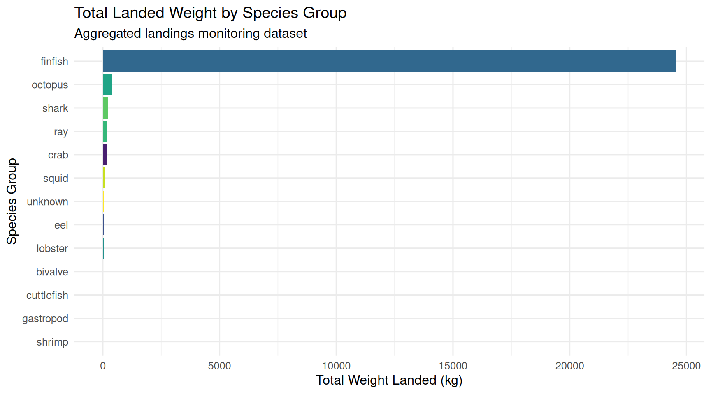
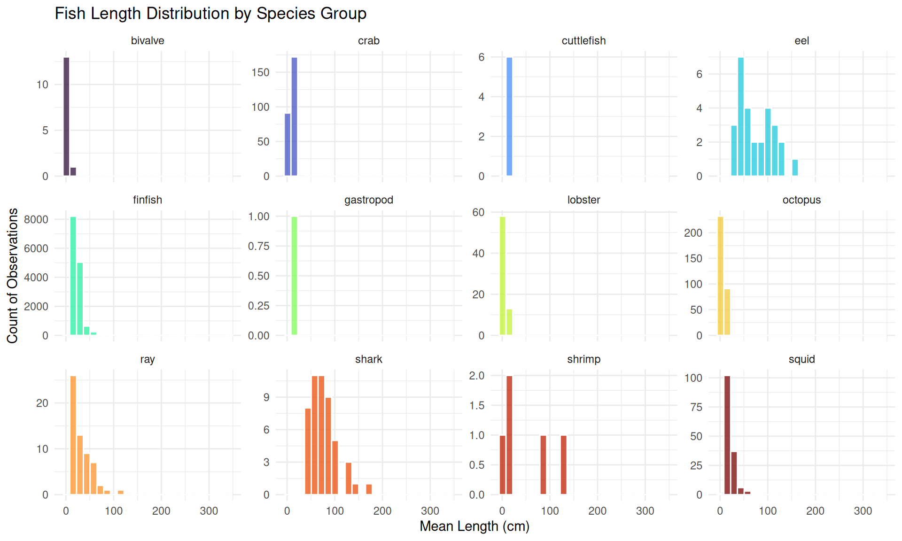
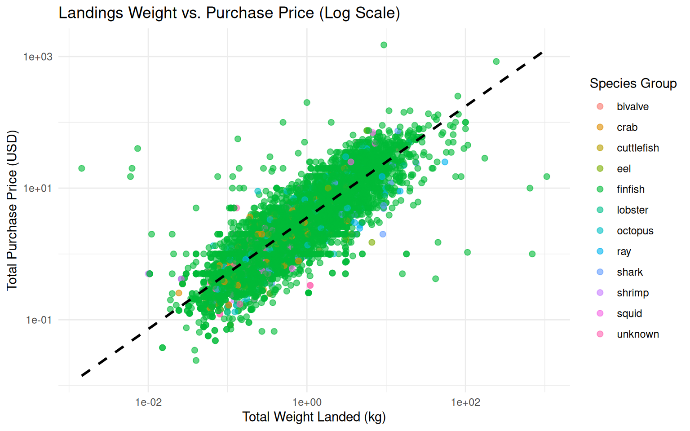

library(readxl)
library(janitor)
library(skimr)
library(tidyverse)
library(knitr)Downloaded Data in R
Data Ingestion, Summarisation, Wrangling, and Visualisation in R
1 Executive Summary
This report documents the workflow for importing, inspecting, cleaning, aggregating, and visualizing small-scale fisheries landings monitoring datasets. The workflow utilises the readr, janitor, dplyr, tidyr, and ggplot2 packages.
NOTE: If this is your first time using R or these packages, you’ll need to install these packages. See ‘Install Packages…’ under ‘Tools’.
2 Environment Setup
First, we load the standard data science libraries (packages) required for data manipulation and visualization.
| Package | Key Functions | Primary Purpose |
readr / readxl |
read_csv(), read_excel() |
Efficient data import with automatic type inference |
janitor |
clean_names(), tabyl(), get_dupes(), remove_empty() |
Fast data cleaning, snake_case conversion, and frequency tables |
skimr |
skim(), skim_without_charts() |
Comprehensive dataset auditing, missing value profiling, and inline sparkline distributions |
dplyr / tidyr |
filter(), mutate(), group_by(), summarize(), pivot_longer() |
Data transformation, aggregation, and reshaping |
ggplot2 |
ggplot(), geom_bar(), geom_point(), geom_histogram(), theme_minimal() |
Layered publication-quality data visualization |
3 Data Import
We import landings monitoring data file after setting the working directory (wd). The working directory is the default folder on your computer where R looks for files to import (like our downloaded data) and saves files you export (like plots or manipulated data).
For example, if your data file was located in ‘data’ folder of the project ’’ in your C: Drive, you would set your wd to the following and run the following code first before loading in your data file: setwd()
# Set working directory set
# setwd()
# Load landings dataset
landings_raw <- read_excel("data/data_request_from_Oct26.xlsx")4 Data Cleaning & Summarizing with janitor and skimr
Raw data sets often contain inconsistent capitalization, spaces, or duplicate records. The ‘janitor’ package provides simple functions to solve these common data quality issues:
clean_names(): Standardizes column names into consistent snake_case (e.g., Field Name becomes field_name).
get_dupes(): Identifies duplicated rows based on specified key variables.
NOTE: Think of the pipe operator (%>%) as translating to “and then” in plain English. Allows you to write and read code from left to right or top to bottom, matching the natural chronological workflow of data analysis.
The ‘skimr’ package
skim():
# Clean column names
landings <- landings_raw %>%
clean_names() %>%
remove_empty(c("rows", "cols"))
# Identify any duplicate rows
# get_dupes(landings)
# Data summary using skimr
skim(landings)| Name | landings |
| Number of rows | 15530 |
| Number of columns | 75 |
| _______________________ | |
| Column type frequency: | |
| character | 44 |
| logical | 1 |
| numeric | 27 |
| POSIXct | 3 |
| ________________________ | |
| Group variables | None |
Variable type: character
| skim_variable | n_missing | complete_rate | min | max | empty | n_unique | whitespace |
|---|---|---|---|---|---|---|---|
| country | 0 | 1.00 | 2 | 2 | 0 | 1 | 0 |
| country_name | 0 | 1.00 | 11 | 11 | 0 | 1 | 0 |
| partner | 0 | 1.00 | 16 | 16 | 0 | 1 | 0 |
| admin1 | 0 | 1.00 | 4 | 8 | 0 | 5 | 0 |
| admin2 | 0 | 1.00 | 4 | 11 | 0 | 6 | 0 |
| admin3 | 0 | 1.00 | 10 | 23 | 0 | 14 | 0 |
| admin3_label | 0 | 1.00 | 4 | 14 | 0 | 14 | 0 |
| admin3_lat | 0 | 1.00 | 8 | 9 | 0 | 14 | 0 |
| admin3_long | 0 | 1.00 | 8 | 10 | 0 | 14 | 0 |
| buyer_id | 7785 | 0.50 | 4 | 19 | 0 | 249 | 0 |
| buyer_gender | 7785 | 0.50 | 4 | 7 | 0 | 3 | 0 |
| landing_site | 0 | 1.00 | 7 | 7 | 0 | 1 | 0 |
| fisher_id | 19 | 1.00 | 6 | 9 | 0 | 688 | 0 |
| fisher_gender | 19 | 1.00 | 4 | 6 | 0 | 2 | 0 |
| trip_id | 0 | 1.00 | 9 | 9 | 0 | 5495 | 0 |
| local_name | 1 | 1.00 | 3 | 37 | 0 | 341 | 0 |
| local_name_only | 1 | 1.00 | 3 | 36 | 0 | 341 | 0 |
| scientific_species | 1 | 1.00 | 7 | 31 | 0 | 261 | 0 |
| common_english | 1 | 1.00 | 4 | 32 | 0 | 254 | 0 |
| scientific_family | 1 | 1.00 | 7 | 16 | 0 | 82 | 0 |
| species_group | 1 | 1.00 | 3 | 10 | 0 | 13 | 0 |
| purchase_price_unit | 0 | 1.00 | 3 | 3 | 0 | 1 | 0 |
| management_unit_name | 3237 | 0.79 | 4 | 11 | 0 | 6 | 0 |
| fisher_admin1 | 10299 | 0.34 | 4 | 8 | 0 | 5 | 0 |
| fisher_admin2 | 10273 | 0.34 | 3 | 11 | 0 | 6 | 0 |
| fisher_admin3 | 10273 | 0.34 | 7 | 23 | 0 | 17 | 0 |
| sci_local_name | 0 | 1.00 | 7 | 56 | 0 | 442 | 0 |
| total_weight_landed | 84 | 0.99 | 1 | 20 | 0 | 6023 | 0 |
| total_weight_purchased | 616 | 0.96 | 1 | 20 | 0 | 2586 | 0 |
| reason_not_sold_badquality | 0 | 1.00 | 1 | 1 | 0 | 2 | 0 |
| reason_not_sold_small | 0 | 1.00 | 1 | 1 | 0 | 2 | 0 |
| reason_not_sold_big | 0 | 1.00 | 1 | 1 | 0 | 2 | 0 |
| reason_not_sold_kept | 0 | 1.00 | 1 | 1 | 0 | 2 | 0 |
| reason_not_sold_other | 0 | 1.00 | 1 | 1 | 0 | 2 | 0 |
| reason_not_sold_other_text | 15509 | 0.00 | 10 | 19 | 0 | 4 | 0 |
| mixed_single | 2115 | 0.86 | 5 | 14 | 0 | 2 | 0 |
| submitted_by | 2115 | 0.86 | 8 | 12 | 0 | 2 | 0 |
| entirecatch_or_share | 3637 | 0.77 | 12 | 13 | 0 | 2 | 0 |
| pelagic_size | 14042 | 0.10 | 7 | 13 | 0 | 2 | 0 |
| a | 114 | 0.99 | 1 | 18 | 0 | 173 | 0 |
| b | 114 | 0.99 | 1 | 18 | 0 | 163 | 0 |
| buyer_type | 8228 | 0.47 | 6 | 19 | 0 | 6 | 0 |
| data_origin | 0 | 1.00 | 8 | 19 | 0 | 3 | 0 |
| weight_unit | 0 | 1.00 | 1 | 3 | 0 | 3 | 0 |
Variable type: logical
| skim_variable | n_missing | complete_rate | mean | count |
|---|---|---|---|---|
| ismature | 220 | 0.99 | 0.52 | TRU: 8034, FAL: 7276 |
Variable type: numeric
| skim_variable | n_missing | complete_rate | mean | sd | p0 | p25 | p50 | p75 | p100 | hist |
|---|---|---|---|---|---|---|---|---|---|---|
| days_fishing | 0 | 1.00 | 1.00 | 0.00 | 1.00 | 1.00 | 1.00 | 1.00 | 1.00 | ▁▁▇▁▁ |
| total_number_landed | 108 | 0.99 | 9.12 | 28.30 | 1.00 | 1.00 | 3.00 | 8.00 | 1505.00 | ▇▁▁▁▁ |
| total_weight_landed_kg | 95 | 0.99 | 1.67 | 12.42 | 0.00 | 0.22 | 0.58 | 1.47 | 1059.00 | ▇▁▁▁▁ |
| total_weight_purchased_kg | 7432 | 0.52 | 2.19 | 18.66 | 0.00 | 0.18 | 0.59 | 1.81 | 1250.00 | ▇▁▁▁▁ |
| total_purchase_price | 1953 | 0.87 | 5.53 | 17.32 | 0.02 | 1.00 | 2.31 | 5.71 | 1500.00 | ▇▁▁▁▁ |
| total_purchase_price_usd | 1951 | 0.87 | 5.53 | 17.32 | -1.00 | 1.00 | 2.31 | 5.71 | 1500.00 | ▇▁▁▁▁ |
| length_mature_cm | 114 | 0.99 | 24.14 | 13.44 | 0.86 | 16.43 | 19.15 | 30.05 | 151.40 | ▇▂▁▁▁ |
| mean_length_cm | 222 | 0.99 | 23.34 | 12.78 | 0.90 | 17.60 | 20.90 | 25.33 | 342.20 | ▇▁▁▁▁ |
| landings_id | 0 | 1.00 | 428243184.16 | 192425433.06 | 148.00 | 352870619.25 | 528040093.00 | 559540173.75 | 603943723.00 | ▂▁▁▁▇ |
| kobo_landings_id | 2115 | 0.86 | 313736.69 | 205481.76 | 6201.00 | 142227.50 | 339737.00 | 468763.00 | 712364.00 | ▇▆▆▆▃ |
| profiling_kobo_id | 13415 | 0.14 | 40630.13 | 31534.50 | 1875.00 | 2805.50 | 37739.00 | 62205.50 | 152159.00 | ▇▅▅▁▁ |
| habitat_deepwater | 1783 | 0.89 | 1.00 | 0.00 | 1.00 | 1.00 | 1.00 | 1.00 | 1.00 | ▁▁▇▁▁ |
| habitat_reef | 1493 | 0.90 | 1.00 | 0.00 | 1.00 | 1.00 | 1.00 | 1.00 | 1.00 | ▁▁▇▁▁ |
| habitat_mangrove | 6947 | 0.55 | 1.00 | 0.00 | 1.00 | 1.00 | 1.00 | 1.00 | 1.00 | ▁▁▇▁▁ |
| habitat_seagrass | 3704 | 0.76 | 1.00 | 0.00 | 1.00 | 1.00 | 1.00 | 1.00 | 1.00 | ▁▁▇▁▁ |
| habitat_mud | 10094 | 0.35 | 1.00 | 0.00 | 1.00 | 1.00 | 1.00 | 1.00 | 1.00 | ▁▁▇▁▁ |
| habitat_sand | 6705 | 0.57 | 1.00 | 0.00 | 1.00 | 1.00 | 1.00 | 1.00 | 1.00 | ▁▁▇▁▁ |
| habitat_estuary | 5108 | 0.67 | 1.00 | 0.00 | 1.00 | 1.00 | 1.00 | 1.00 | 1.00 | ▁▁▇▁▁ |
| trophic_level | 114 | 0.99 | 3.26 | 0.65 | 2.00 | 2.76 | 3.48 | 3.67 | 4.50 | ▅▁▅▇▂ |
| calcium_mg | 284 | 0.98 | 67.17 | 50.86 | 4.56 | 38.35 | 44.47 | 74.76 | 485.19 | ▇▁▁▁▁ |
| iron_mg | 284 | 0.98 | 0.98 | 0.83 | 0.14 | 0.62 | 0.75 | 0.89 | 4.79 | ▇▂▁▁▁ |
| omega3_g | 284 | 0.98 | 0.18 | 0.10 | 0.05 | 0.12 | 0.15 | 0.21 | 0.60 | ▇▃▂▁▁ |
| protein_g | 284 | 0.98 | 19.01 | 1.10 | 14.05 | 18.49 | 18.80 | 19.78 | 23.06 | ▁▁▇▃▁ |
| selenium_ug | 284 | 0.98 | 38.46 | 16.40 | 8.35 | 24.10 | 33.56 | 48.30 | 279.16 | ▇▁▁▁▁ |
| vitamin_a_ug | 953 | 0.94 | 56.69 | 43.00 | 0.88 | 29.08 | 41.68 | 80.04 | 291.99 | ▇▂▁▁▁ |
| zinc_mg | 284 | 0.98 | 1.35 | 0.61 | 0.25 | 0.92 | 1.27 | 1.79 | 5.76 | ▇▆▁▁▁ |
| total_nutrient_content | 113 | 0.99 | 179.34 | 64.74 | 0.00 | 132.22 | 174.15 | 222.85 | 631.37 | ▂▇▁▁▁ |
Variable type: POSIXct
| skim_variable | n_missing | complete_rate | min | max | median | n_unique |
|---|---|---|---|---|---|---|
| date_landed | 0 | 1 | 2023-09-26 00:00:00 | 2026-10-10 00:00:00 | 2025-06-28 00:00:00 | 672 |
| submission_date | 0 | 1 | 2023-09-26 12:37:00 | 2026-10-10 05:20:56 | 2025-07-21 22:46:42 | 5356 |
| last_refresh_ts | 0 | 1 | 2026-10-11 15:53:02 | 2026-10-11 15:53:02 | 2026-10-11 15:53:02 | 1 |
NOTE: The four core column types handle distinct data needs in R:
1. character (
2. logical (
3. numeric (
4. POSIXct (
5 Data Manipulation with tidyverse
We group catch landings by species group to calculate total catch weight, total monetary value in USD, and mean length.
Data wrangling involves filtering rows, selecting columns, computing aggregate metrics, and creating calculated fields:
filter(): Subsets rows matching specific logical conditions (e.g., species groups or non-null values).select(): Keeps or drops specific columns.mutate(): Creates new calculated variables (e.g., total value in local currency vs. USD, catch weight per trip).group_by()+summarize(): Aggregates metrics (e.g., total weight landed, mean length) across categorical groups.
site_species_summary <- landings %>%
group_by(species_group) %>%
summarize(
total_landings = n(),
total_weight_kg = sum(total_weight_landed_kg, na.rm = TRUE),
total_value_usd = sum(total_purchase_price_usd, na.rm = TRUE),
mean_length_cm = mean(mean_length_cm, na.rm = TRUE),
.groups = "drop") %>% #remove all grouping attributes from the data frame
mutate(price_per_kg_usd = if_else(total_weight_kg > 0, total_value_usd / total_weight_kg, 0)) %>%
arrange(desc(total_weight_kg))
site_species_summary6 Data Visualization with ggplot2
ggplot2 implements the Grammar of Graphics, combining data, aesthetic mappings (aes), and geometric objects (geom_*):
Bar Charts (
geom_col()): Compare catch totals across species groups, landing sites, etc.Histograms / Density Plots (
geom_histogram()): Examine fish length or weight distributions.Scatter Plots (
geom_point()): Analyze length-weight relationships.Faceting (
facet_wrap()): Split plots across subgroup categories (e.g., buyer gender, habitat type).
6.1 Total Catch Weight by Species Group
We evaluate total landed weight across species categories to determine dominant targeted species groups.
landings %>%
filter(!is.na(species_group)) %>%
group_by(species_group) %>%
summarize(total_kg = sum(total_weight_landed_kg, na.rm = TRUE), .groups = "drop") %>%
ggplot(aes(x = reorder(species_group, total_kg), y = total_kg, fill = species_group)) +
geom_col(show.legend = FALSE) +
coord_flip() +
scale_fill_viridis_d(option = "viridis") +
labs(
title = "Total Landed Weight by Species Group",
subtitle = "Aggregated landings monitoring dataset",
x = "Species Group",
y = "Total Weight Landed (kg)"
) +
theme_minimal(base_size = 12)
6.2 Length Distribution across Species Groups
We analyze the distribution of mean fish body lengths to assess catch size dynamics.
landings %>%
filter(!is.na(species_group), !is.na(mean_length_cm), mean_length_cm > 0) %>%
ggplot(aes(x = mean_length_cm, fill = species_group)) +
geom_histogram(bins = 25, alpha = 0.75, color = "white") +
facet_wrap(~ species_group, scales = "free_y") +
scale_fill_viridis_d(option = "turbo") +
labs(
title = "Fish Length Distribution by Species Group",
x = "Mean Length (cm)",
y = "Count of Observations"
) +
theme_minimal() +
theme(legend.position = "none")
6.3 Catch Weight vs. Price per Landing Event
We evaluate the relationship between landing weight and total purchase price in USD.
landings %>%
filter(!is.na(total_weight_landed_kg), !is.na(total_purchase_price_usd), total_weight_landed_kg > 0) %>%
ggplot(aes(x = total_weight_landed_kg, y = total_purchase_price_usd, color = species_group)) +
geom_point(alpha = 0.6, size = 2) +
geom_smooth(method = "lm", se = FALSE, color = "black", linetype = "dashed") +
scale_x_log10() +
scale_y_log10() +
labs(
title = "Landings Weight vs. Purchase Price (Log Scale)",
x = "Total Weight Landed (kg)",
y = "Total Purchase Price (USD)",
color = "Species Group"
) +
theme_minimal()
7 Resources
8 Training
Install & Setup the software
Follow the instructions at https://swirlstats.com/students.html to install R, RStudio, and the swirl() package in R
Check-in meeting to review & troubleshoot, if needed
Introduction to programming
Using the swirl() package in R, complete the “R programming” lesson
- All the chapters are helpful, but you can skip #10 (lapply/sapply), #11 (vapply/tapply), #13 (Simulation), and #15 (Base graphs)
Complete Introduction to R and RStudio in the Data Carpentry course
Complete Project Management with RStudio in the Data Carpentry course
Understanding troubleshooting & how to get help:
Coding Club: Troubleshooting and how to find help
Data Carpentry Chapter 3: Seeking Help
The next two sections are interchangeable and could be done in either order.
Data manipulation - focus on tidyverse packages
Background reading: https://openscapes.org/blog/2020-10-12-tidy-data/
Swirl course: Getting and Cleaning data
Coding Club: Advanced Data Manipulation
Data visualization
Coding Club: Beautiful and informative data visualization → recommend this one first because of it’s great explanation of plot layering
Data carpentry chapter on ggplot2